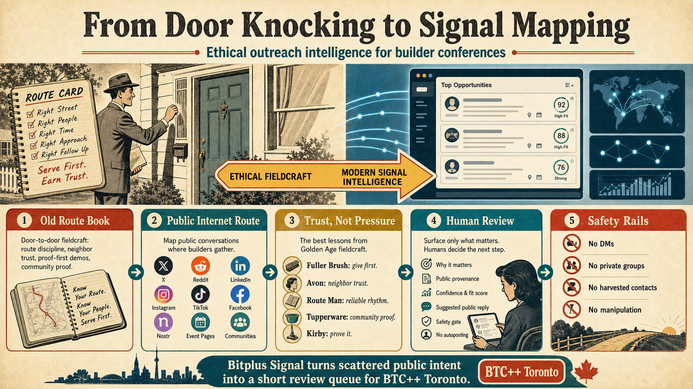

Who this is for
Conference organizers, founders, community builders, agencies, meetup hosts, and open-source teams who need a better answer to: who should we look at next?
Bitplus Signal started as a hackathon console for BTC++ Toronto, but the pattern is bigger than one conference. It helps a human find public conversations where an event, product, service, project, or community might genuinely belong.
Honesty is kindness.

Conference organizers, founders, community builders, agencies, meetup hosts, and open-source teams who need a better answer to: who should we look at next?
It turns public posts, event pages, community calendars, source logs, and trust clues into a short review queue with provenance, fit scoring, safety gates, and draft-only public replies.
The same pattern can be retooled for products, services, events, communities, and meetup groups. Swap the target, seed sources, fit rules, geography, and safety policy, then review the next best public signal.
No private DMs, no private groups, no harvested contacts, no autoposting, and no pressure scripts. If a row does not have enough public evidence, it stays blocked, hidden, or draftless.
The origin notes behind this project ask what still works from old route-based selling when the manipulative parts are stripped away. The answer is surprisingly modern: know your route, serve first, prove the fit, respect community memory, and let a human decide.
Bitplus Signal carries that forward as a public-source review tool. It is meant to make outreach more honest, more specific, and easier to say no to when the fit is not there.